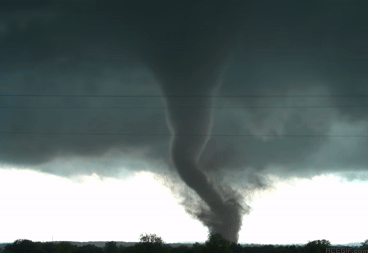
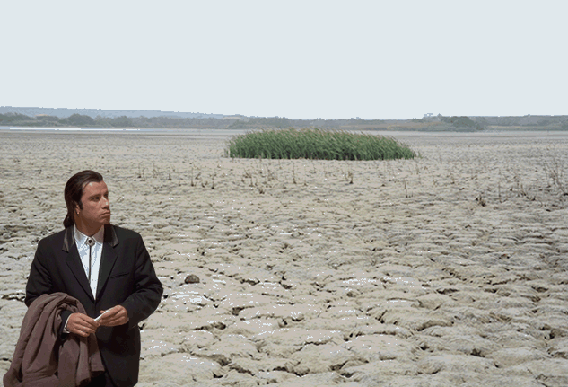

El Fenomeno del Niño es un patron climático natural en el océano Pacífico tropical que trae temperaturas de la superficie del mar más cálidas que el promedio y tiene una gran influencia en el clima en todo el mundo, afectando a miles de millones de personas.Y bueno las aguas mas calidas estan confinados en el Pacífico occidental por los vientos que soplan al oeste al este y empujando las aguas más calidas en Aunstralia e Indonesia. Y los cientificos todavia buscan el porque de este suceso pero la declaración de los vientos puedes durar hasta 2 semanas, Este fenomeno puede darse de 2 a 7 años variable y el agua del oceano puede estar 4 grados celsius de lo normal de la temperatura.
El Fenomeno del Niño Más fuertes |
1982-1983 | 1957-1958 | 1972-1973 |
|---|---|---|---|

Este pequeño video nos resume en como afecta a este fenomeno el cual algunas de estas cosas seria como el cambio de temperatura en los oceanos y la aparición de tornados en algunos paises como en Asia o la sequia de algunos de ellos tambien 